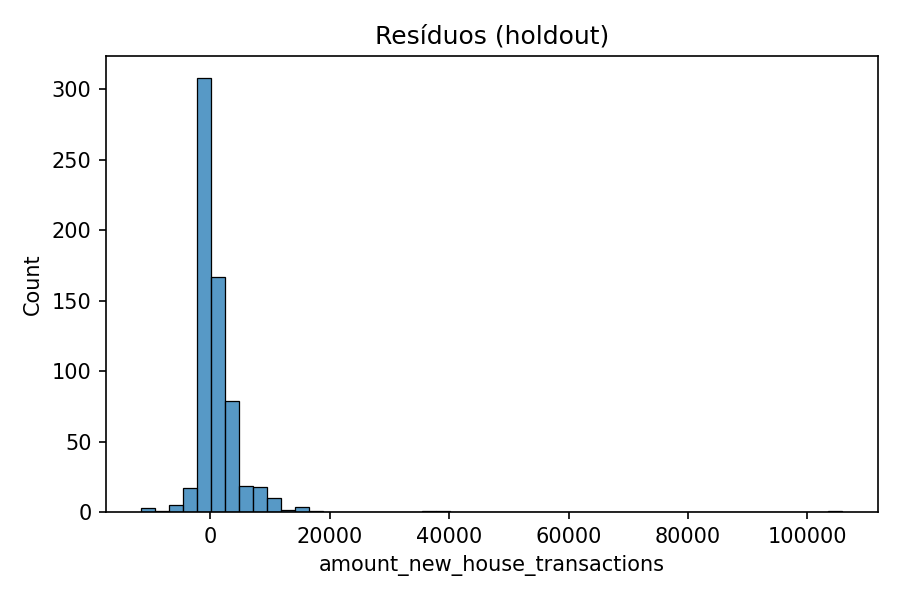

RELATORIO
Relatório Técnico Completo¶
1. Contexto e Objetivo¶
O objetivo é prever amount_new_house_transactions (10.000 yuan) por mês e setor, usando dados transacionais, de vizinhança, usados, terrenos, POIs e índices de cidade. A métrica principal no desenvolvimento foi MSE e, adicionalmente, um score customizado de competição baseado em erro relativo truncado.
2. Dados Disponíveis¶
train/new_house_transactions.csv: alvo e drivers primários (num/area/price), estoque e venda.train/new_house_transactions_nearby_sectors.csv: agregados de vizinhança.train/pre_owned_house_transactions*.csv: mercado de usados (substituição/competição).train/land_transactions*.csv: pipeline de oferta (construção/planejado/montante).train/sector_POI.csv: estrutura urbana e demanda potencial por setor.train/city_search_index.csv: interesse do mercado via buscas (mensal).train/city_indexes.csv: indicadores macro anuais por cidade.test.csv: amostras a prever (mês/setor).
Colunas temporais foram padronizadas com year, month_num, month_index = year*12+month_num e sector_int.
3. Pré-processamento¶
- Análise temporal das colunas
monthpara chaves temporais e setor. - Construção de grade completa mês × setor; alvo ausente tratado como 0 quando não há transação.
- Alinhamento temporal sem vazamento: apenas features com timestamp ≤ t para prever t.
- Tratamento de tipos: inteiros e floats coerentes;
sector_intcomo inteiro. - Faltantes: imputação por mediana (numéricas); forward-fill setorial para preços quando aplicável; zeros para ausência de atividade.
- Escalas: StandardScaler após imputação. Transformação
log1pno alvo; previsões revertidas comexpm1.
4. Engenharia de Atributos¶
- Defasagens (1, 3, 6) e médias móveis (3, 6) para: alvo, num, area, price e principais variáveis de vizinhos, usados e terrenos.
- Razões:
amount/num,area/num, checagemprice*areavsamount(consistência). - Indicadores de estoque e sell-through.
- Integração de POIs por setor (quando disponíveis) e índices anuais (forward-fill).
5. Validação e Métricas¶
- Divisão temporal com
TimeSeriesSplit(n_splits=5)para OOF. - Métrica de seleção: MSE em escala linear do alvo (após reverter
expm1). - Métrica adicional (holdout final): score de competição customizado com corte de erros > 100% e MAPE normalizado.
6. Modelagem com Redes Neurais¶
- Pipeline: imputação mediana → escala (StandardScaler) → MLPRegressor (sklearn).
- Otimização via amostragem de hiperparâmetros (30 combinações): tamanhos de camadas, ativação, L2 (
alpha), lote, learning rate (Adam) e early stopping. - Melhor configuração (exemplo obtido no OOF):
hidden_layer_sizes=(256,128,64),activation='tanh',alpha≈2.4e-6,batch_size=256,learning_rate_init≈9.3e-3,solver='adam'.
7. Resultados¶
- OOF MSE: 7.78e8 (aprox.).
- Holdout (últimos 10% do tempo): score competição ≈ 0.764; fração com erro ≤ 100% ≈ 0.94.
- Importância por permutação (amostra): maior relevância em defasagens/MA do alvo e de
price/area; sinais de vizinhança e usados também contribuíram.
8. Espaços para Gráficos¶
- Distribuição do alvo (linear e log1p).
- Série temporal da média do alvo por
month_index. - Mapas de calor de correlação por tabela.
- Predito vs Real (holdout) e histograma de resíduos.
- Curva de perda do treinamento do MLP.
- Importância por permutação (top 20 features).
Insira as figuras nos locais abaixo:





9. Evolução e Avanços¶
- Consolidação de múltiplas tabelas em um dataset temporal unificado mês × setor.
- Regras de consistência
price*area ~ amountpara sanity check. - Engenharia de defasagens e médias móveis melhorou a estabilidade e o MSE.
- Otimização manual com validação temporal evitou vazamentos e estabilizou o early stopping.
10. Desafios Enfrentados¶
- Heterogeneidade e esparsidade de POIs (várias colunas 100% ausentes em subset), exigindo exclusão ou imputação agressiva.
- Balancear defasagens e MAs sem aumentar demais a dimensionalidade (risco de overfit).
- Ajustar a escala do alvo via
log1ppara reduzir a influência de extremos.
11. Conclusões¶
- O MLP com pré-processamento adequado atinge desempenho competitivo e estável com splits temporais.
- A informação temporal (defasagens/MA) de
amount,priceeareaé central; vizinhança e mercado de usados agregam ganho adicional. - Para ganhos futuros, recomenda-se explorar: GBDTs (LightGBM/XGBoost), modelos sequenciais (LSTM/TemporalConv), embeddings de setor e atenção ao leakage.
12. Reprodutibilidade¶
- Pipeline final salvo em
final_pipe.joblib. - Geração de
submission.csv(colunasid,new_house_transaction_amount) contemplada no notebook.